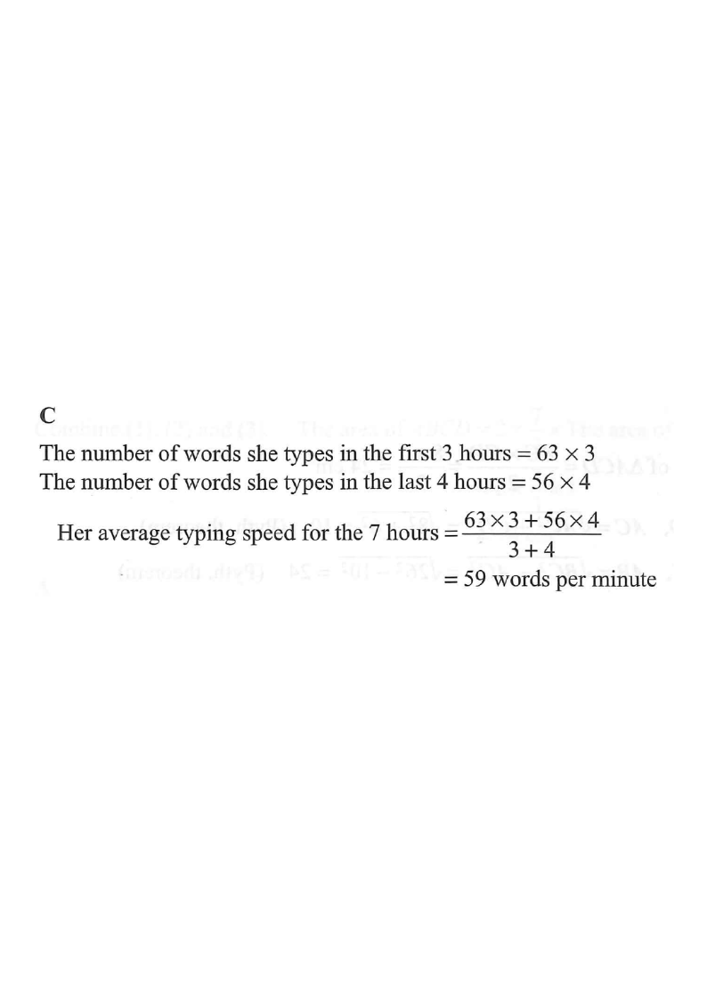

7 hours · two different speeds
Scroll the solution → the diagram highlights each stage.
Mary performs a typing task for $7$ hours. Her average typing speeds for the first $3$ hours and the last $4$ hours are $63$ words per minute and $56$ words per minute respectively. Find her average typing speed for the $7$ hours.

The task has two stages with different speeds:
First $3$ h at $63$ words/min · Last $4$ h at $56$ words/min
Hint: The “average speed” is a weighted average — the weights are the times, not the number of stages.
\[ 63 \times 3 = 189 \text{ “hour-units of speed”} \]
Since the speed is per minute, but we just need the ratio of contributions, we can multiply speed by hours (the common time unit).
Hint: $\text{words} = \text{speed} \times \text{time}$. Keep the time in the same unit for both stages.
\[ 56 \times 4 = 224 \text{ “hour-units of speed”} \]
Hint: The second stage is longer (4 h), so it carries more weight in the average.
\[ \text{Average} = \frac{63 \times 3 + 56 \times 4}{3+4} = \frac{189+224}{7} = \frac{413}{7} \]
Hint: Total “speed × hours” divided by total hours gives the average speed.
\[ \frac{413}{7} = 59 \text{ words per minute} \]
Hint: $413 = 7 \times 59$ exactly, so no rounding is needed. Compare with the naive trap option D ($\approx 60$).
Question. Mary cycles at \(12\text{ km/h}\) for \(2\) hours and then at \(18\text{ km/h}\) for \(3\) hours. Find her average speed for the whole journey.